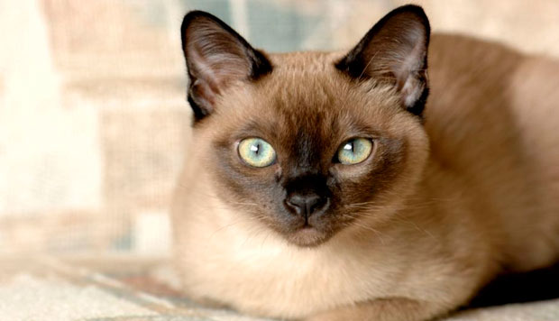
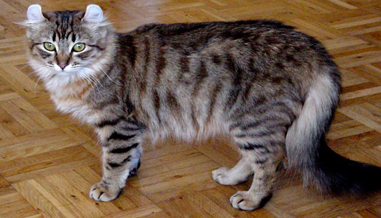
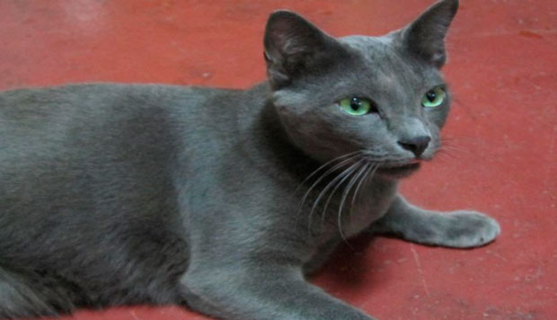
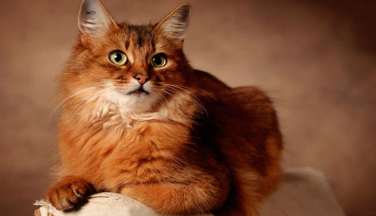
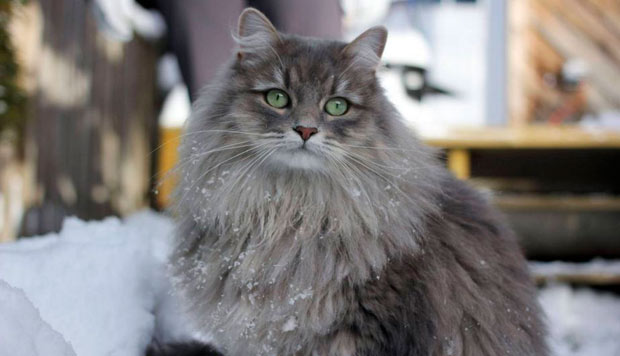
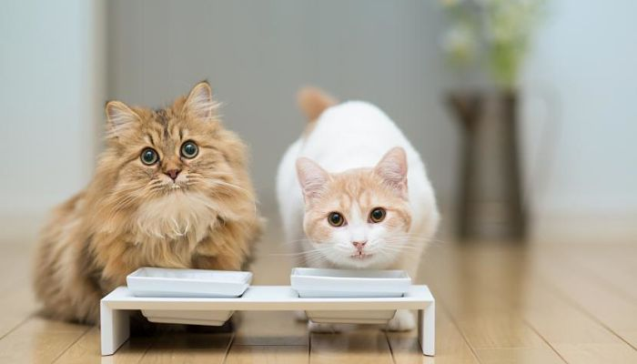
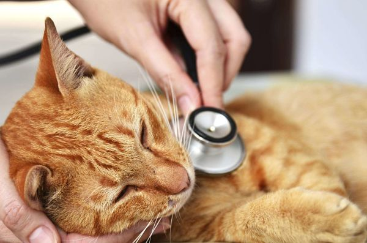

-

Gato Siamés
El aullido de un siamés es muy familiar para los aficionados de esta raza, no sólo por ganarse la atención sino que le gusta “conversar” con sus dueños. Es un gato elegante y muy atlético que por lo general gravitan en torno a una persona y son leales y cariñosos.
-

Gato persa
Esta raza ha sido la número uno desde que el CFA comenzó a llevar registros en 1871. Son cariñosos y leales, pero su pelo largo necesita ser peinado todos los días.
-

Gato Bobtail Americano
Su cuerpo es moderadamente largo, semi robusto, grueso, y de postura notablemente rectangular. Los Bobtails se desarrollan lentamente, alcanzando la madurez entre los dos y los tres años, Como los Bobcats, los patas traseras de los Bobtails son ligeramente más largas que las patas delanteras, y los pies son grandes y redondos y pueden tener mechones en los dedos.
-

Gato ruso azul
Es una raza de gato de tamaño medio y pelo corto plateado, fácilmente distinguible de otras razas. Es famoso por ser un gato inteligente y afectuoso, que disfruta el contacto con los humanos y es ideal para la vida en familia. Fácil de cuidar, este cariñoso animal es un compañero perfecto.
-

Gato somalí
La única diferencia entre el gato Somalí y el gato abisinio es la longitud de su pelo. Mientras en el somalí el pelo es semilargo, en el abisinio cuentan con un pelo corto.
-

Gato Siberiano
Es un gato nativo de la zona oriental de Rusia, específicamente de la fría región de Siberia y probablemente sea el resultado del cruce entre el gato europeo y el gato salvaje de los bosques siberianos.
La alimentación del gato

Si deseamos que nuestro gato crezca sano y fuerte debemos garantizarle una buena alimentación; equilibrada y acorde a sus necesidades. El gato es un carnívoro, en su alimentación son indispensables los nutrientes de origen animal, su metabolismo necesita una gran cantidad de proteínas y grasas procedentes tanto de carne como de pescado.
Horario de alimentación
Tan buena opción es marcar un horario de comida y ceñirse a él con convicción, como proporcionar al animal comida disponible en todo momento para que el mismo se autorregule. En este caso, deberemos ir controlando que el gato no empieza a ganar peso, a pesar de que la mayoría de los gatos comen estrictamente lo necesario, hay gatos glotones, dispuestos a comer todo lo que tengan a su alcance.
Si decidimos que nuestro gato siga un horario de alimentación:
- Debe comer 2 o 3 veces al día
- Podemos alternar las ingestas con alimentos secos y húmedos:
- Mañana: pienso o croquetas secas
- Mediodia: lata o comida casera
- Noche: pienso o croquetas secas
- Debemos proporcionarle diariamente unos 100 gr. de alimento seco, para evitar la descomposición. Esta cantidad es aproximada, dependerá de la edad del animal y de las especificaciones del fabricante.
Enfermedades
Las enfermedades graves más comunes en los gatos
Como cualquier ser vivo los felinos también pueden padecer diversas enfermedades, algunas más graves que otras. Resulta ser que en el caso de los gatos, la inmensa mayoría de estas enfermedades son causadas por distintos virus. Por suerte, con la prevención adecuada se pueden llegar a evitar muchas, pues para algunas ya existen vacunas. A continuación vamos a comentar las enfermedades graves más comunes que padecen los felinos: